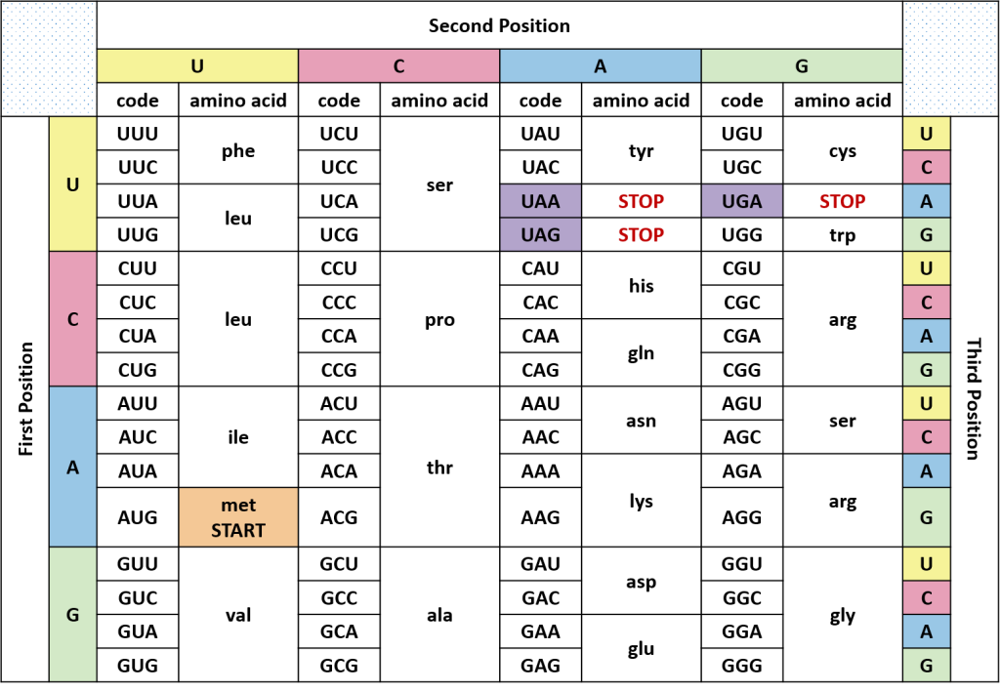
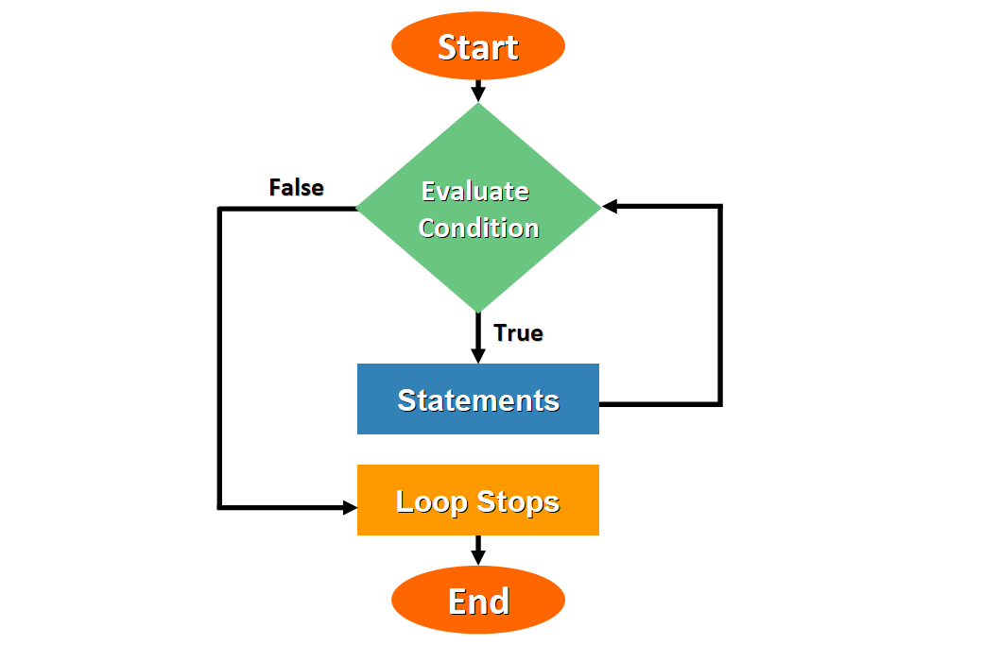
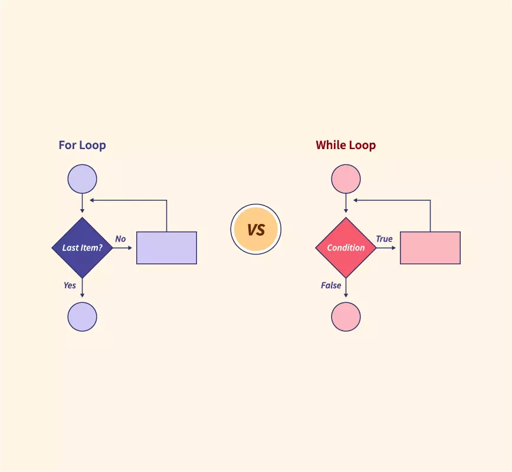

Chapter 6 Controlling the flow of our programs
6.1 Boolean Operators
In R, understanding boolean operators is crucial for making logical comparisons and decisions in your code. Boolean operators are used to compare values and evaluate conditions, providing a foundation for decision-making processes in programming.
In this tutorial, we will explore the basics of boolean operators, including equality, greater-than, and less-than comparisons. We will also delve into logical operations, introducing the essential concepts of “and” and “or” with both vectorized and non-vectorized forms.
6.1.1 Comparison Operators
Comparison operators allow us to compare values and return a boolean result, either TRUE or FALSE. Let’s start with some common comparison operators:
6.1.1.1 Equality (==)
The equality operator (==) checks if two values are equal. For example:
## [1] TRUE## [1] TRUE6.1.1.2 Greater Than (>)
The greater-than operator (>) checks if one value is greater than another:
## [1] TRUE6.1.2 Logical Operators
Now, let’s explore logical operators, which allow us to combine multiple conditions and make more complex decisions in our code.
6.1.2.1 Vectorized “AND” (&)
The vectorized “and” operator (&) allows us to perform element-wise comparisons on vectors. It returns a vector of boolean values, which is extremely useful when dealing with data sets. For example:
## [1] FALSE FALSE TRUE TRUE TRUE## [1] TRUE TRUE TRUE FALSE FALSE## [1] FALSE FALSE TRUE FALSE FALSE6.1.2.2 Vectorized “OR” (|)
Similar to the “and” operator, the vectorized “or” operator (|) performs element-wise comparisons and returns a vector of boolean values. Here’s an example:
## [1] FALSE FALSE TRUE TRUE TRUE## [1] FALSE FALSE FALSE FALSE FALSE## [1] FALSE FALSE TRUE TRUE TRUE6.1.2.3 Non-Vectorized “AND” (&&) and “OR” (||)
Non-vectorized “and” (&&) and “or” (||) operators in R are used for performing logical operations that return a single boolean value based on the evaluation of multiple conditions
The non-vectorized forms of “and” (&&) and “or” (||) return a single value and are typically used for non-vectorized logical operations. For example:
## [1] FALSEKeep in mind that as of R 4.3.0, these operators must be given inputs of length 1.
6.1.3 Conclusion
Understanding boolean operators and logical operations is fundamental in programming with R. These operators enable you to make decisions based on comparisons, creating more dynamic and powerful code. Whether you are comparing values or combining conditions, boolean operators are essential tools in your programming toolkit. Experiment with different comparisons and logical combinations to gain a deeper understanding of their versatility and practicality in R.
6.2 Conditional statements (if, else)
In the world of programming, making decisions based on data is crucial. Imagine you’re analyzing gene expression data, and you want to process it differently depending on whether a gene is highly expressed or not. In R, this decision-making ability is known as control flow, and it’s essential for creating flexible and adaptive programs. In this tutorial, we’ll explore the power of the if statement, which allows us to control the flow of our R code based on specific conditions. We’ll walk through practical examples, starting with gene expression analysis.
6.2.1 The if Statement
The if statement is a fundamental tool for controlling program flow in R. It checks whether a specified condition evaluates to TRUE or FALSE. Depending on the result, either the code within the if block or the else block (if defined) gets executed.
Imagine you’re working with DNA sequences, and you want to check if a given sequence contains the sequence motif “ATG” which is a start codon in genetics. Here’s a basic example using the if statement:
# Bioinformatics example: DNA sequence
sequence <- "GCTAGTGTAGCGT"
# Check if the sequence contains the start codon "ATG"
if (grepl("ATG", sequence)) {
print("Start codon found")
} else {
print("Start codon not found")
}## [1] "Start codon not found"In this scenario, the if statement checks whether the sequence contains “ATG” using the grepl function. If it’s found, it prints a message indicating that the start codon is present; otherwise, it prints a message indicating that the start codon is not found.
If you want to check whether both start codon and stop codon are in the DNA sequence:
sequence <- "GCTAGTGTAGCGT"
# Check if the sequence contains the start codon "ATG" or the stop codon "TAA"
if (grepl("ATG", sequence) || grepl("TAA", sequence)) {
print("Start codon or Stop Codon are found")
} else {
print("No Start codon or Stop codon are found")
}## [1] "No Start codon or Stop codon are found"Note we use || , the non-vectorized version or for condition checking.
6.2.2 else statement
Now, let’s explore the else statement in the context of DNA sequence analysis. Suppose you want to perform a different action if the sequence doesn’t contain the start codon. For instance, you might want to check for a stop codon. Here’s a simplified example:
# Bioinformatics example: DNA sequence without the start codon
sequence <- "CGTACTAGCGT"
# Check if the sequence contains the start codon "ATG"
if (grepl("ATG", sequence)) {
print("Start codon found")
} else {
print("Start codon not found, checking for stop codon")
# Check if the sequence contains the stop codon "TAA"
if (grepl("TAA",sequence)) {
print("Stop codon found")
} else {
print("No start or stop codon found")
}
}## [1] "Start codon not found, checking for stop codon"
## [1] "No start or stop codon found"In this example, the if statement first checks for the presence of the start codon “ATG.” If it’s not found, it enters the else block and checks for the stop codon “TAA.” Depending on the outcome, it prints the corresponding message.
6.2.3 else if
If you have multiple conditions and want to test them one by one, the pseudo-code is:
6.2.4 Exercise
In real biology, there are multiple stop codons: UAA, UAG, and UGA (T is converted to U in RNA). Use the multiple else if clauses to find the stop codon: TAA, TAG, and TGA in a DNA sequence.

6.2.5 Conclusion
In conclusion, the if and else statements in R provide bioinformaticians with the means to adapt their analyses and make data-driven decisions. By employing these control flow structures, researchers can enhance the reproducibility and adaptability of their bioinformatics workflows, ultimately advancing our understanding of biological systems. Whether you’re searching for genetic elements or classifying sequences, mastering control flow is an essential skill in the bioinformatics toolbox.
6.3 Loops
In the world of data analysis and programming, loops are indispensable tools for executing repetitive tasks efficiently. They allow us to automate processes like processing multiple files or iterating through steps in an analysis pipeline. In R, we have two main types of loops: the while loop and the for loop. In this section, we’ll delve into their usage with real-world examples and explore when to employ each type.
6.3.1 The while Loop

The while loop repeatedly runs a block of code as long as a specified condition remains true. A practical scenario could involve quality-controlling sequencing files one by one until we encounter a file that fails a test. Here’s an example:
expression_vec <- c(0, 4, 8, 16, 32)
new_expression_vec <- c()
i <- 1
while (i <= length(expression_vec)) {
expression_value <- expression_vec[i]
new_expression_vec[i] <- log2(expression_value) # Calculate the base-2 logarithm
i <- i + 1 # Increment the index to process the next element
}
new_expression_vec## [1] -Inf 2 3 4 5In the given code, the loop counter i is initially set to 1. The while loop iterates as long as i is less than or equal to the length of the expression_vec vector. In each iteration, it calculates the base-2 logarithm of the current element in expression_vec and stores it in new_expression_vec, while incrementing the value of i by 1. This incrementing of i ensures that the loop processes the next element in the vector during each iteration until all elements have been processed.
Note, the calculation in R is vectorized, you can use:
## [1] -Inf 2 3 4 5to get the same results.
6.3.2 While Loops in Real Life
Researchers often work with large datasets generated from DNA sequencing machines. These machines produce files containing vast amounts of genetic information, and it’s crucial to ensure the quality of this data before using it in further analyses. Imagine these files as a collection of books, each representing genetic information from a different sample.
To ensure that the data is reliable, scientists perform a process called quality control (QC). It’s similar to checking books for errors, missing pages, or smudged ink before studying their contents. One important aspect of QC in sequencing data is assessing the quality of the readings from the sequencing machine. This quality is often represented as a numerical score, with higher scores indicating better data. Researchers typically set a threshold value, like a score of 30, which they consider acceptable quality.
The code snippet below (this is just a pseudo-code) illustrates how to iterate through a vector of file names, read each file, and check if the mean quality score falls below a specified threshold:
files <- c("sample1.fq", "sample2.fq", "sample3.fq")
i <- 1
# Start a `while` loop with the condition: while `i` is less than or equal to the length of `files`
while (i <= length(files)) {
# Read the current file
fq <- readFastq(files[i])
# Check if the mean quality score is below 30
if (meanQual(fq) < 30) {
# Print a failure message if the quality check fails
print(paste(files[i], "failed QC"))
# Exit the loop using `break`
break
}
# Increment the index `i` to move to the next file
i <- i + 1
}In this case, the loop iterates through files, reads each one, and performs quality control. If a file fails the quality check, the loop prints a failure message and exits.
6.3.3 The for Loop

On the other hand, the for loop iterates through a predefined sequence of values. Consider a scenario where we want to standardize gene expression across all samples using Z-scores:
# Create a matrix of gene expression data
expression_mat <- matrix(1:12, nrow = 3, ncol = 4)
# Define the row names (gene names) and column names (sample names)
rownames(expression_mat) <- c("gene1", "gene2", "gene3")
colnames(expression_mat) <- c("sample1", "sample2", "sample3", "sample4")
# Get the gene names
genes <- rownames(expression_mat)
# Start a for loop that iterates through each gene name 'g' in 'genes'
for (g in genes) {
# Calculate the mean expression for the current gene 'g'
mean_expr <- mean(expression_mat[g, ])
# Calculate the standard deviation of expression for the current gene 'g'
sd_expr <- sd(expression_mat[g, ])
# Standardize the expression values for the current gene 'g' using Z-scores
expression_mat[g, ] <- (expression_mat[g, ] - mean_expr) / sd_expr
}
# Print the resulting standardized expression matrix 'expression_mat'
expression_mat## sample1 sample2 sample3 sample4
## gene1 -1.161895 -0.3872983 0.3872983 1.161895
## gene2 -1.161895 -0.3872983 0.3872983 1.161895
## gene3 -1.161895 -0.3872983 0.3872983 1.161895In this example, the for loop efficiently iterates through each gene, calculates the mean and standard deviation of expression, and then standardizes that gene’s row. This process repeats for all genes, allowing for consistent normalization.
Of course, you can use the scale function in R to do this directly without using a for loop. Note, scale works by columns. To get the same result, you need to first transpose the matrix, scale it and then transpose it back.
## sample1 sample2 sample3 sample4
## gene1 -1.161895 -0.3872983 0.3872983 1.161895
## gene2 -1.161895 -0.3872983 0.3872983 1.161895
## gene3 -1.161895 -0.3872983 0.3872983 1.161895
## attr(,"scaled:center")
## gene1 gene2 gene3
## 0 0 0
## attr(,"scaled:scale")
## gene1 gene2 gene3
## 1 1 16.3.4 Conclusion
It’s crucial to understand that loops can provide fine-grained control for accessing and transforming data at an element level. However, in many cases, R offers vectorized operations that simplify code and make it more readable, as demonstrated with the Z-score calculation using the scale function.
Remember, while loops and for loops are valuable tools in your data analysis toolkit, but it’s essential to choose the most suitable method for the task at hand. By mastering these loop structures, you can streamline your data analysis and automation processes, making your work more efficient and precise. Computers are good at repetitive work.
Whenever you are manually doing the same task multiple times, think of the loops!
6.4 Gene Expression Annotation using Loops and Control Structures
We often encounter scenarios where we need to categorize data based on specific criteria. In this example, we’ll use a combination of loops and control structures in the R programming language to add custom annotations to gene expression measurements for a group of patients. We’ll categorize their expression levels into different classes: “not-expressed,” “low,” “medium,” and “high.”
6.4.1 The Data
Suppose we have gene expression measurements for 5 patients stored in a vector called expression_vec. These measurements represent the expression levels of a specific gene.
6.4.2 Creating Annotations
We want to annotate each patient’s expression status based on the range of their expression values. To do this, we’ll initiate an empty vector called annotations to store our annotations.
Now, let’s go through the process step by step.
6.4.3 The Loop
for (expression_value in expression_vec) {
if (expression_value == 0) {
annotation <- "not-expressed"
} else if (expression_value > 0 & expression_value < 5) {
annotation <- "low"
} else if (expression_value >= 5 & expression_value < 20) {
annotation <- "medium"
} else {
annotation <- "high"
}
annotations <- c(annotations, annotation)
}Here’s what’s happening in the code:
We use a for loop to iterate through each expression_value in the expression_vec vector.
Inside the loop, we use a series of if and else if statements to categorize each expression_value based on its range.
If the value is exactly 0, we assign the annotation “not-expressed.”
If the value is greater than 0 but less than 5, we assign the annotation “low.”
If the value is greater than or equal to 5 but less than 20, we assign the annotation “medium.”
If none of the above conditions are met, we assign the annotation “high.”
Finally, we append each annotation to the annotations vector.
6.4.4 Output
Let’s see the results of our annotations:
## [1] "not-expressed" "medium" "medium" "medium"
## [5] "high"6.4.5 Putting it all together
expression_vec<- c(0, 5, 10, 6, 22)
# initiate an empty vector
annotations <- c()
for (expression_value in expression_vec){
if ( expression_value ==0 ){
annotation <- "not-expressed"
} else if (expression_value >0 & expression_value < 5) {
annotation<- "low"
} else if (expression_value >=5 & expression_value <20) {
annotation<- "medium"
} else {
annotation<- "high"
}
annotations<- c(annotations, annotation)
}
annotations## [1] "not-expressed" "medium" "medium" "medium"
## [5] "high"In R, everything is vectorized. There is a much better way to achieve the same thing using the case_when function in the dplyr package. We will cover it in the later lecture.
6.4.6 Conclusion
This approach to categorizing gene expression data is essential in various biological and medical research contexts. For example:
Drug Development: When studying the impact of a drug on gene expression, researchers need to categorize gene expression levels to assess the drug’s effectiveness.
Cancer Research: Identifying genes with high or low expression levels can provide insights into cancer progression and potential therapeutic targets.
Disease Biomarker Discovery: Categorizing gene expression in patients with a specific disease can help identify biomarkers for early diagnosis.
By combining loops and control structures as shown in this example, scientists and analysts can efficiently handle and interpret complex biological data.
6.5 Let’s solve a Challenge
You’re given a vector of daily average temperatures (in Celsius) for a month. Your task is to analyze the temperature data to find out the following:
The number of days with temperatures above the monthly average.
Whether any day’s temperature exceeds 30°C (considering it as a threshold for a very hot day).
The number of days with temperatures below 15°C (considering it as a threshold for a cold day).
Given Data:
temperatures <- c(12, 14, 16, 20, 22, 24, 26, 28, 30, 32, 18, 16, 14, 22, 24, 26, 20, 18, 17, 15, 13, 11, 9, 7, 5, 8, 10, 12, 14, 16)Tasks:
Calculate the monthly average temperature.
Use a loop to iterate through the temperatures vector.
For each temperature, check if it’s above the monthly average and count these occurrences.
Check if there’s any day with a temperature exceeding 30°C.
Count the number of days with temperatures below 15°C.
- Print the results:
Total number of days above the monthly average.
Whether there was a very hot day (temperature > 30°C).
Number of cold days (temperature < 15°C).
6.6 Solution
Before diving into the solution, I encourage all students to take a moment to challenge themselves and attempt to solve the problem independently. This coding exercise provides a valuable opportunity to practice essential programming concepts in R, such as loops, conditional statements, and basic data manipulation. Start by considering how you would calculate the monthly average temperature from a list of daily temperatures and how you might track the number of days above the average, very hot days (above 30°C), and cold days (below 15°C). Once you’ve given it a try, feel free to compare your approach with the provided solution to deepen your understanding and refine your coding skills. Happy coding!
6.6.1 using a for loop
# Given data: Daily average temperatures for a month (in Celsius)
temperatures <- c(12, 14, 16, 20, 22, 24, 26, 28, 30, 32, 18, 16, 14, 22, 24, 26, 20, 18, 17, 15, 13, 11, 9, 7, 5, 8, 10, 12, 14, 16)
# Manually calculate the monthly average temperature
total_temperature <- 0 # Initialize a variable to hold the sum of all temperatures
for (temp in temperatures) {
total_temperature <- total_temperature + temp # Accumulate the total temperature
}
monthly_average <- total_temperature / length(temperatures) # Divide by the number of temperatures to get the average
print(paste("Monthly average temperature:", monthly_average, "C"))## [1] "Monthly average temperature: 17.3 C"# Initialize counters for the conditions
days_above_average <- 0
very_hot_days <- 0
cold_days <- 0
# Use a loop to iterate through the temperatures vector
for (temp in temperatures) {
# Check if the temperature is above the monthly average
if (temp > monthly_average) {
days_above_average <- days_above_average + 1
}
# Check if the temperature exceeds 30°C (very hot day)
if (temp > 30) {
very_hot_days <- very_hot_days + 1
}
# Check if the temperature is below 15°C (cold day)
if (temp < 15) {
cold_days <- cold_days + 1
}
}
# Print the results
print(paste("Number of days above the monthly average:", days_above_average))## [1] "Number of days above the monthly average: 13"## [1] "Number of very hot days (temperature > 30°C): 1"## [1] "Number of cold days (temperature < 15°C): 12"In this solution, we start with a list of daily average temperatures for a month, stored in the ‘temperatures’ vector. The first part of the code calculates the monthly average temperature by adding up all the daily temperatures and then dividing the total by the number of days in the month. We use a loop to go through each temperature, adding it to the ‘total_temperature’ variable. Once we have the sum, we divide it by the number of days to find the average and print it using the ‘cat’ function.
The second part of the code uses loops and conditional statements to analyze the temperatures. It tracks three things: the number of days with temperatures above the monthly average, the number of very hot days (where the temperature is above 30°C), and the number of cold days (where the temperature is below 15°C). For each temperature in the ‘temperatures’ vector, the code checks if it’s above the monthly average, above 30°C, or below 15°C, and increments the corresponding counter if the condition is met. Finally, the code prints out the results using ‘paste’, displaying the count of days for each condition.
6.6.2 vectorized solution
The solution shown here is how you usually solve the problem in python. However, as I introduced earlier, R is vectorized, many of the calculations can be simplified.
temperatures <- c(12, 14, 16, 20, 22, 24, 26, 28, 30, 32, 18, 16, 14, 22, 24, 26, 20, 18, 17, 15, 13, 11, 9, 7, 5, 8, 10, 12, 14, 16)
monthly_average<- mean(temperatures)
monthly_average## [1] 17.3## [1] FALSE FALSE FALSE FALSE FALSE FALSE FALSE FALSE FALSE TRUE FALSE FALSE
## [13] FALSE FALSE FALSE FALSE FALSE FALSE FALSE FALSE FALSE FALSE FALSE FALSE
## [25] FALSE FALSE FALSE FALSE FALSE FALSE# remember in R, FALSE is 0 and TRUE is 1 under the hood. you can sum it up to
# find how many are TRUE
very_hot_days<- sum(very_hot_days_lgl)
very_hot_days## [1] 1Similarly, you can
## [1] 12You see how powerful R is when combining the logical vector and its vectorized feature!
6.7 Section complete
Congratulations on completing this section of our course! You’ve made significant progress in understanding the essentials of boolean operators, control flow with if statements, and the power of loops. These foundational skills are crucial for analyzing data, automating tasks, and making logical decisions in your code. It’s impressive how much you’ve learned and can now apply to real-world problems, from gene expression analysis to data quality control and beyond.
Keep this momentum going as you move forward. The concepts you’ve mastered here will serve as building blocks for more advanced programming techniques and analytical methods. Remember, practice is key to deepening your understanding and honing your skills. Let’s move on to the next section.